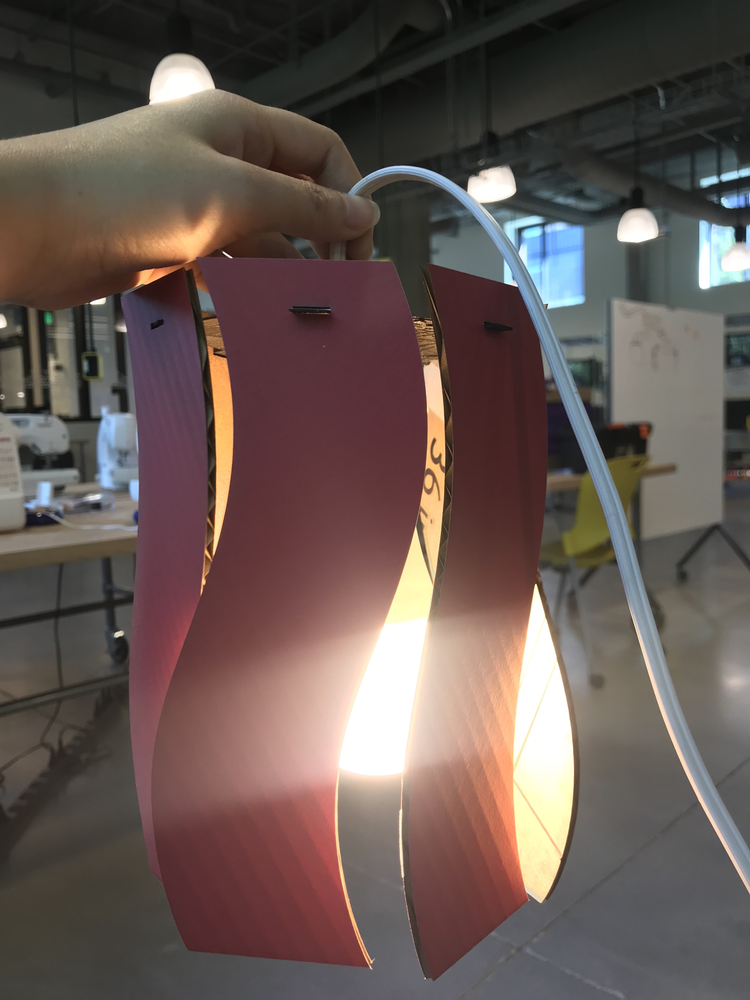
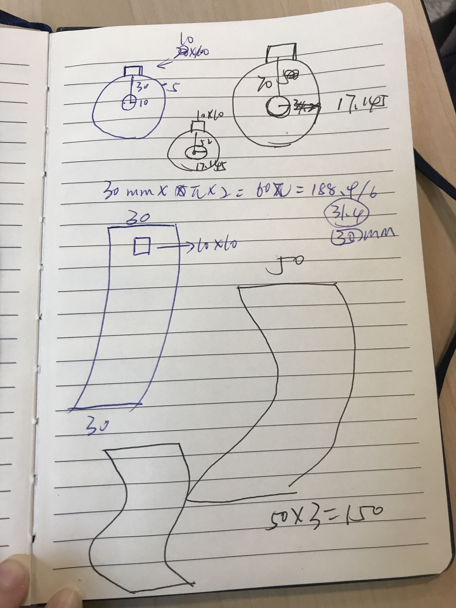
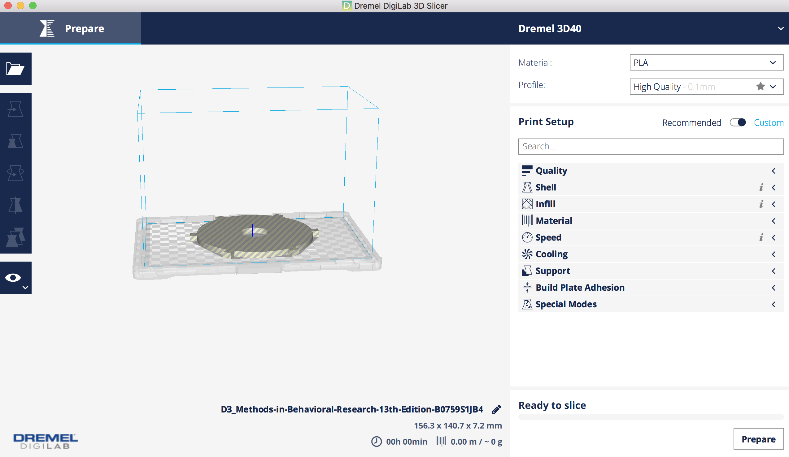
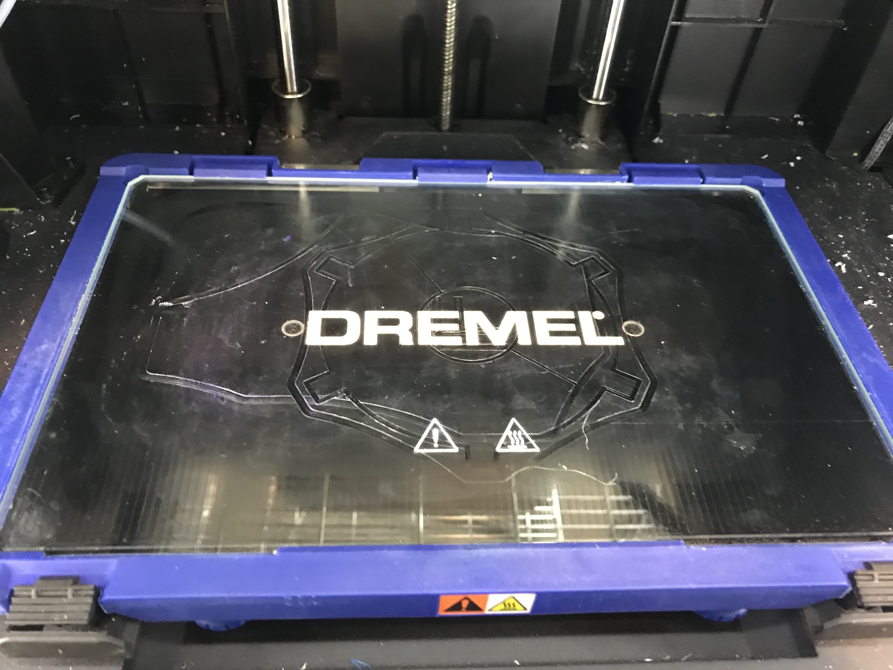
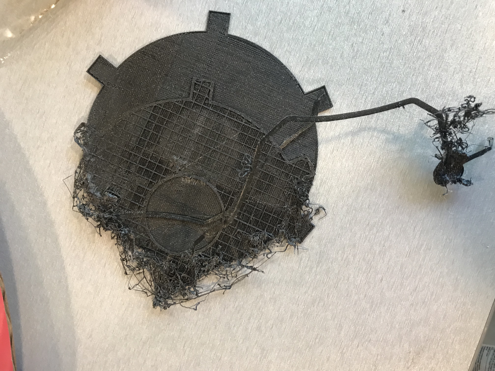
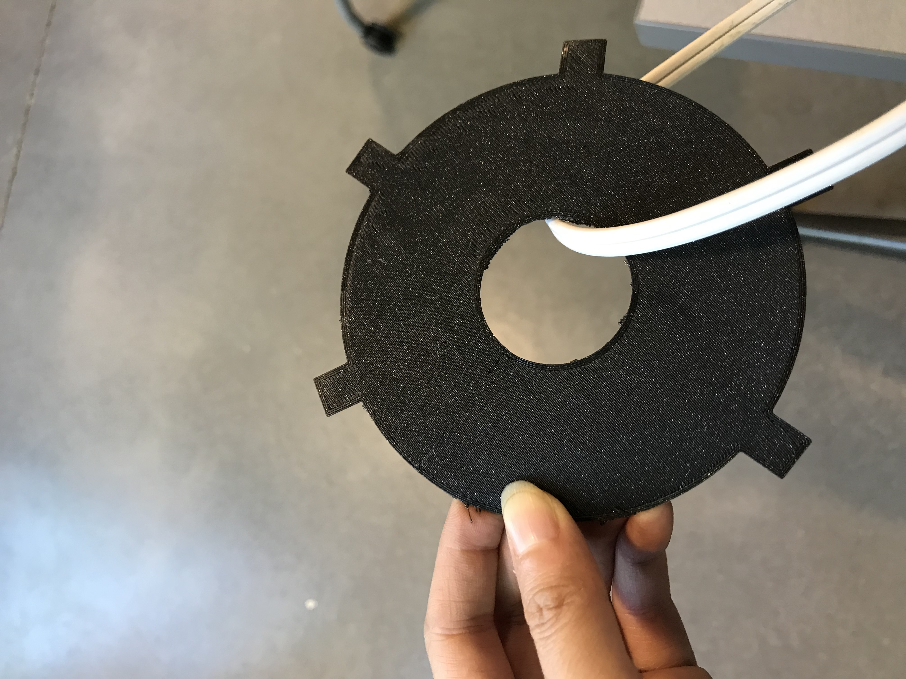

Huan's Lamp!

Ideation
I ideated several ideas on the whiteboard, and iterated based on feasibility and desirability.

Trials and Errors
Then I started to use Rhino to create the shapes. It is a fun learning process, following Nadya's wonderful tutorial. Some mistakes I made during the process include forgetting to draw a hole in the middle to let the lamp socket get through. Building 3D models on Rhino for the first time was also challenging for me. So I went back and forth and finally build the one that I liked.
Based on my ideation, the radius of my socket was 60 mm, which could fit my bulb in. Also, trying to keep the 3D model thinner, I set the thickness to be 1.55mm. Accordingly, the depth of the fit-in of the lamp pieces was also 1.55mm.

Execution
Then, learning that 3D printing takes a much longer time, I printed my 3D model first. The first trial and error was that my original shape was too big to fit into Mill's 3D printer. So I went back to adjust the radius of my 3D model to 52mm. In the second trial, I forget to try the filament before printing, so the fillament did not come out when I started printing. The printer just made empty shapes on the glue lol.
 
For a third trial, I followed the procedures correctly. However, I did not put enough glue, so that my first prototype failed in the middle of printing.

Finally, for the last trial, my 3D model got printed (very slowly!). I used the setting recommended by the Mill staff and it worked well. The setting was: nozzle temp-280; platform temp-100; print speed-100%; fan speed-100% Here is what it looked like with the lamp cord!


Then I laser cut my lamp pieces. Laser cutting was so much easier and familiar for me now! Based on the thickness of my cardboard, my setting are: speed-25; power-100; frequency-70.
Demonstration
Source File 1 Lamp Pieces. Source File 2 Rhino for 3d Printing. Source File 3 Print Setting.
Thanks Dawn and Tyson for answering my questions at the Mill! Thanks Nadya for providing the tutorial.